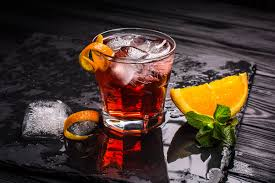
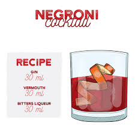

Negroni

Ingredients:
- Gin 30 ml
- Vermouth 30 ml
- Bitters Liquer 30 ml
- Ice 2 or 3 cubes
Steps:
- On a cold glass, put the ice
- Pour the Gin & Vermouth into the glass
- Stir and put the Bitter Liquer
- Now it is ready to be drinked!
- ENJOY

Back to Homepage